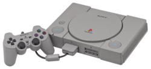
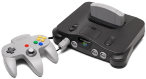
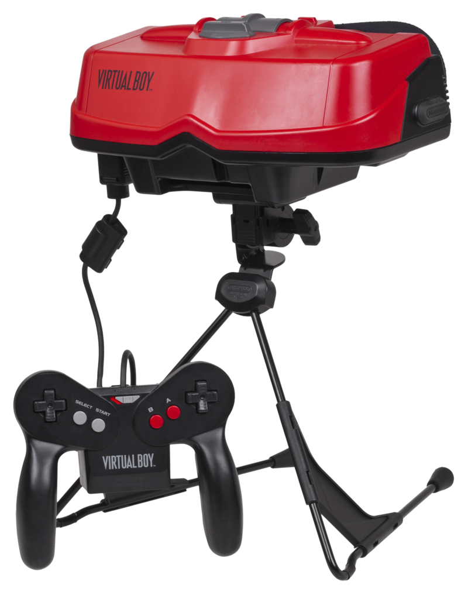
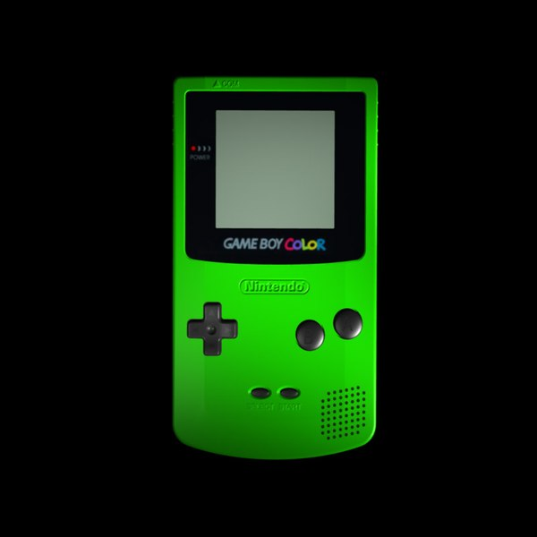

PlayStation |
Nintendo 64 |
VirtualBoy |
GameBoy Color |
|  |  |  |  |
|
Primera consola de Sony, la cual tuvo éxitos como:
|
Esta fue una de las consolas de Nintendo a la que peor le fue, cayendo en picado el número de ventas con respecto a la anterior de sobremesa, la SNES. Unos de sus principales juegos son:
|
VirtualBoy fuel una apuesta que Nintendo hizo con la realidad virtual, sin embargo no funcionó y casi nadie la compró. |
Variación de la GameBoy de cuarta generación, pero en este caso se veía a color y el diseño era un poco más distinto. |